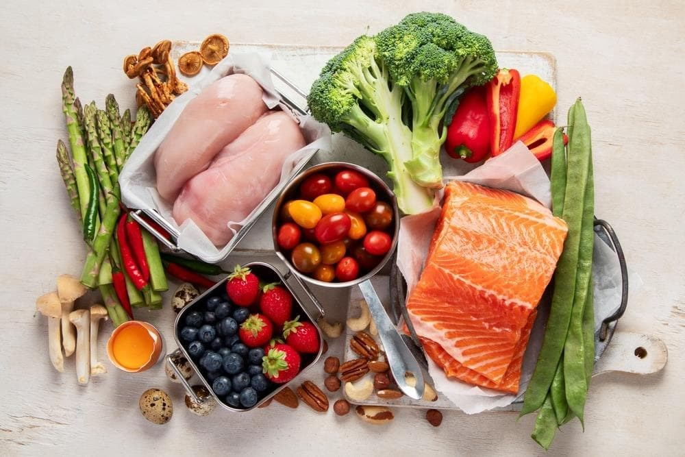

Hábitos que puedes sostener
Organiza tu alimentación y movimiento con metas realistas. Avanza sin dietas extremas ni buscar la perfección.
Bienestar que cabe en tu vida
Alimentación, movimiento y pequeños pasos en un solo lugar. NutriApp Integral te ayuda a gestionar tu peso y construir hábitos sostenibles, con un plan pensado para ti y apoyo profesional.
Jueves, 8 de octubre
TU RESUMEN DE HOY
Bienestar para tu día a día
Una mirada integral a tu salud: lo que comes, cómo te mueves y cómo te sientes.
Organiza tu alimentación y movimiento con metas realistas. Avanza sin dietas extremas ni buscar la perfección.
Tus gustos, restricciones, horarios y presupuesto importan. Encuentra opciones que se adapten a tu vida.
Comparte tu evolución con un nutricionista, con tu autorización, y recibe orientación para ajustar el camino.
Hecho para ti
Define tus objetivos y preferencias; tu nutricionista puede revisar y ajustar el plan contigo.
Las sustituciones conservan tus restricciones y quedan pendientes de revisión profesional.
Semana del 5 al 11 de octubre

120 g de pollo + 1 taza de quinoa + verduras
Propuesta de IA · pendiente de revisión1 taza de lentejas + ½ taza de arroz + ¼ palta
Propuesta de IA · pendiente de revisiónCada avance cuenta
Revisa peso, medidas, actividad y constancia en el tiempo. Los cambios diarios son normales: lo importante es entender el contexto y cómo te sientes, junto a tu nutricionista.
10 sep. — 8 oct. 2026
Acompañamiento a tu ritmo
Crea tu cuenta y completa tus objetivos, preferencias, restricciones y rutina.
Explora opciones para tu semana y solicita la revisión de tu nutricionista.
Añade comidas, agua, actividad y hábitos. Lo sencillo también cuenta.
Revisa tendencias, comparte tus avances y organiza tus consultas profesionales.
Para nutricionistas
Centraliza la información de tus pacientes y conecta la planificación con el seguimiento. Tu criterio profesional guía cada decisión.
Panel profesional
Tecnología con criterio
La inteligencia artificial es una herramienta de apoyo. Sus propuestas están sujetas a revisión profesional y no reemplazan el diagnóstico, la evaluación ni el juicio de tu nutricionista.
Sabrás cuándo una opción fue generada por IA y si está pendiente de revisión.
El profesional valida tu contexto, ingredientes, restricciones y necesidades.
El acceso profesional requiere tu autorización y se usa para la atención nutricional.
Elige cómo empezar
Funciones para acompañar tus hábitos y tu progreso.
S/. 80
Tu siguiente paso
Crea tu cuenta y comienza a conocer tus hábitos. Si eres nutricionista o tienes alguna duda, conversemos sobre cómo NutriApp Integral puede ayudarte.
Cuéntanos qué necesitas.